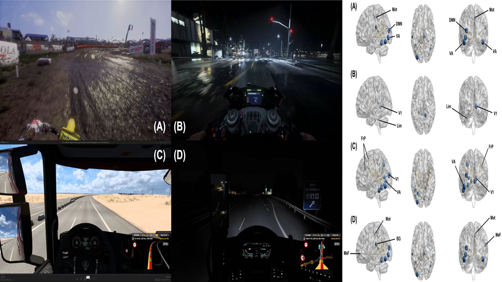

An fMRI study investigating how video motion and brightness relate to subjective visual fatigue and brain connectivity.
- Visual Fatigue
- fMRI
- Functional Connectivity

An fMRI study investigating how video motion and brightness relate to subjective visual fatigue and brain connectivity.
An fMRI study investigating how video motion and brightness relate to subjective visual fatigue and brain connectivity.